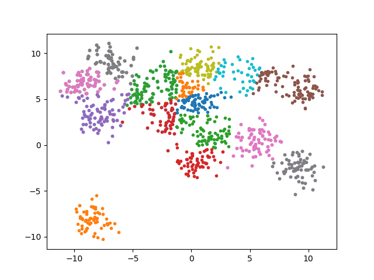

本文是在研究哈密顿蒙特卡洛中碰撞问题时的一个聚类的想法。虽然不再使用碰撞的方式研究hmc，然而将这个想法记录下来，因为可能用于其它方面。
在多粒子碰撞的过程中，如果有1000个粒子，如果每次都计算这些粒子之间的碰撞，那么计算量会很大。如果将粒子分成小组，然后计算小组内碰撞，那么总的计算量将会大为降低，其代价是不够准确。
因此首先可以将整个样本空间分为两类，随后每类又分为两类，以此类推。如果一组样本无法分为两类，或者样本个数小于阈值，则停止对其分类。
import numpy as np from random import randrange import matplotlib.pylab as plt from sklearn.datasets import make_blobs LAYERS = 8 POINTS = 1000 CENTERS = LAYERS * 2 DIM = 2 N = 10 MINIMUM_POINTS = 100 points, _ = make_blobs(n_samples=POINTS, centers=CENTERS, n_features=2, random_state=0) #random assign rnk = np.random.randn(LAYERS,POINTS)> 0 def M(points, r): return np.mean(points[r,:], axis=0), np.mean(points[np.logical_not(r),:],axis=0) def E(points, mu0, mu1): return np.linalg.norm(points - mu0, axis=1) < np.linalg.norm(points - mu1, axis=1) def EM(idx, layer): if layer==LAYERS or idx.size==0 or idx.size<MINIMUM_POINTS: return p = points[idx,:] r = rnk[layer, idx] if np.all(r) or np.all(np.logical_not(r)): return mu0_, mu1_ = M(p, r) r_ = E(p, mu0_, mu1_) if np.all(r_) or np.all(np.logical_not(r_)): return rnk[layer, idx] = r_ EM(idx[r_], layer+1) EM(idx[np.logical_not(r_)], layer+1) def plot(idx, layer): if layer == LAYERS or idx.size==0 or idx.size<MINIMUM_POINTS: return p = points[idx,:] r = rnk[layer, idx] p0 = p[r,:] p1 = p[np.logical_not(r),:] if np.sum(np.logical_not(r))<MINIMUM_POINTS or np.sum(r)<MINIMUM_POINTS: plt.plot(p0[:,0], p0[:,1],'.') p1 = p[np.logical_not(r),:] plt.plot(p1[:,0], p1[:,1],'.') plot(idx[r],layer+1) plot(idx[np.logical_not(r)],layer+1) plt.ion() ALL_INDEX = np.array(np.arange(POINTS)) for i in range(N): EM(ALL_INDEX, 0) plt.cla() plot(ALL_INDEX, 0) plt.show() plt.pause(1) plt.pause(10)
